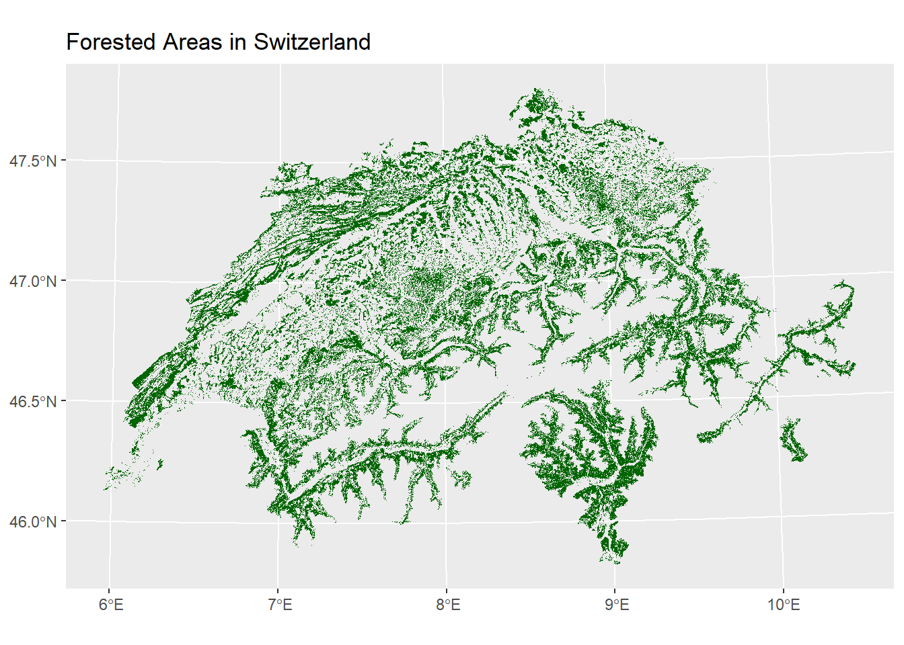
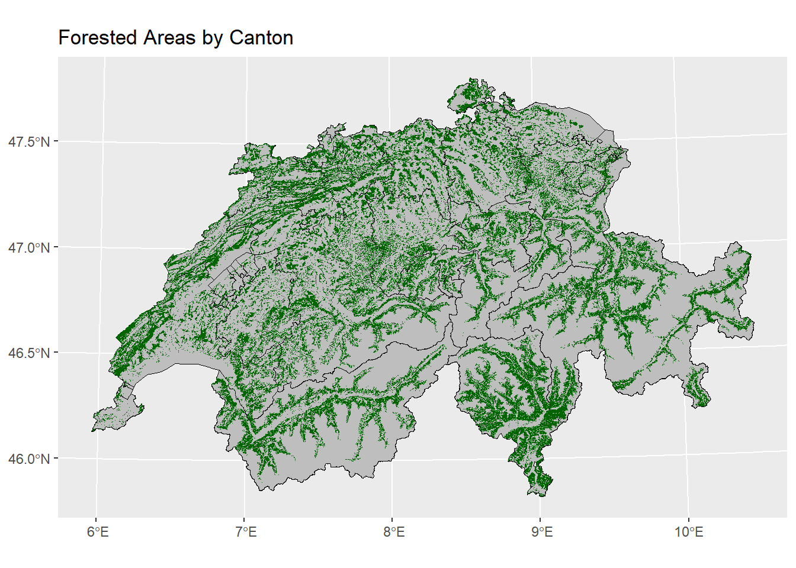
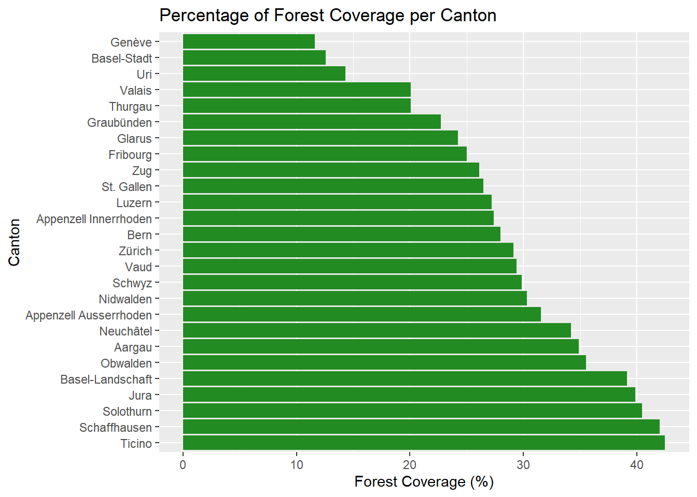

# Load necessary packages
library(sf)
library(ggplot2)
library(dplyr)Solution for Week 1: Vector Data Processing
Introduction
In this document, I solve the tasks for week 1 of the course Spatiotemporal Datascience. The goal is to calculate the percentage of forest area per canton using swissTLM3D and swissboundaries3D datasets.
Load Libraries
Load Data
# Define file paths
tlm3d_path <- "data/SWISSTLM3D_2025.gpkg"
boundaries_path <- "data/swissBOUNDARIES3D_1_5_LV95_LN02.gpkg"
# Load the TLM3D dataset (land cover information)
tlm3d <- read_sf(tlm3d_path, "tlm_bb_bodenbedeckung")
# Load the Swiss canton boundaries
swiss_boundaries <- read_sf(boundaries_path, "tlm_kantonsgebiet")
# Print summaries
head(tlm3d)Simple feature collection with 6 features and 13 fields
Geometry type: POLYGON
Dimension: XYZ
Bounding box: xmin: 2707318 ymin: 1233667 xmax: 2750662 ymax: 1236564
z_range: zmin: 521.282 zmax: 1429.118
Projected CRS: CH1903+ / LV95
# A tibble: 6 × 14
uuid datum_aenderung datum_erstellung erstellung_jahr erstellung_monat
<chr> <date> <date> <int> <int>
1 {25C22342-3… 2015-04-28 2008-01-23 2002 NA
2 {2B94BD0B-A… 2015-05-27 2008-01-23 2002 NA
3 {BDC6C99E-B… 2023-11-29 2008-01-23 2002 NA
4 {A9F735D5-8… 2020-08-28 2008-01-23 2002 NA
5 {4F7F58E5-9… 2020-09-03 2008-01-23 2002 NA
6 {4E498F65-4… 2015-07-20 2008-01-23 2002 NA
# ℹ 9 more variables: grund_aenderung <chr>, herkunft <chr>,
# herkunft_jahr <int>, herkunft_monat <int>, objektart <chr>,
# revision_jahr <int>, revision_monat <int>, revision_qualitaet <chr>,
# geom <POLYGON [m]>head(swiss_boundaries)Simple feature collection with 6 features and 19 fields
Geometry type: MULTIPOLYGON
Dimension: XYZ
Bounding box: xmin: 2485410 ymin: 1078560 xmax: 2755680 ymax: 1283504
z_range: zmin: 260.694 zmax: 4615.402
Projected CRS: CH1903+ / LV95
# A tibble: 6 × 20
uuid datum_aenderung datum_erstellung erstellung_jahr erstellung_monat
<chr> <dttm> <dttm> <int> <int>
1 {C0A… 2022-11-16 00:00:00 2012-10-26 00:00:00 2012 10
2 {873… 2022-11-16 00:00:00 2012-10-26 00:00:00 2012 10
3 {54B… 2023-11-14 00:00:00 2012-10-26 00:00:00 2012 10
4 {E11… 2016-12-09 00:00:00 2012-10-26 00:00:00 2012 10
5 {F06… 2016-12-09 00:00:00 2012-10-26 00:00:00 2012 10
6 {FB7… 2022-11-16 00:00:00 2012-10-26 00:00:00 2012 10
# ℹ 15 more variables: grund_aenderung <chr>, herkunft <chr>,
# herkunft_jahr <int>, herkunft_monat <int>, revision_jahr <int>,
# revision_monat <int>, revision_qualitaet <chr>, objektart <chr>,
# kantonsnummer <int>, see_flaeche <dbl>, kantonsflaeche <dbl>, name <chr>,
# icc <chr>, einwohnerzahl <int>, geom <MULTIPOLYGON [m]>Filter & Plot Forest Areas
# Filter only forest areas
forests <- filter(tlm3d, objektart == "Wald")
# Ensure CRS is correctly set
forests <- st_set_crs(forests, 2056)
# Plot to check if forests are loaded correctly
ggplot() +
geom_sf(data = forests, fill = "darkgreen", color = NA) +
ggtitle("Forested Areas in Switzerland")
Getting an Overview Per Canton
# Clip forests to canton boundaries
forests_per_canton <- st_intersection(swiss_boundaries, forests)
# Plot to check the clipped forests
ggplot() +
geom_sf(data = swiss_boundaries, fill = "gray", color = "black") +
geom_sf(data = forests_per_canton, fill = "darkgreen", color = NA) +
ggtitle("Forested Areas by Canton")
Calculate Forest Percentage Per Canton
# Calculate total forest area per canton (THIS WAS MISSING)
canton_forest_area <- forests_per_canton %>%
group_by(name) %>%
summarise(ForestArea = sum(st_area(geom))) %>%
ungroup()
# Calculate total canton area
canton_total_area <- swiss_boundaries %>%
group_by(name) %>%
summarise(TotalArea = sum(st_area(geom))) %>%
ungroup() %>%
st_drop_geometry() # <- Drop spatial data before merging
# Merge datasets to compute the percentage
forest_coverage <- left_join(canton_forest_area, canton_total_area, by = "name") %>%
mutate(ForestPercentage = (ForestArea / TotalArea) * 100)
# Print results
print(forest_coverage)Simple feature collection with 26 features and 4 fields
Geometry type: MULTIPOLYGON
Dimension: XYZ
Bounding box: xmin: 2485429 ymin: 1075268 xmax: 2833012 ymax: 1295934
z_range: zmin: 192.853 zmax: 2446.83
Projected CRS: CH1903+ / LV95
# A tibble: 26 × 5
name ForestArea geom TotalArea ForestPercentage
* <chr> [m^2] <MULTIPOLYGON [m]> [m^2] [1]
1 Aargau 4.90e8 Z (((2633150 1232128 507… 1.40e9 34.9
2 Appenzell Au… 7.66e7 Z (((2734883 1236930 914… 2.43e8 31.6
3 Appenzell In… 4.72e7 Z (((2743415 1237217 139… 1.72e8 27.4
4 Basel-Landsc… 2.03e8 Z (((2598695 1247723 659… 5.18e8 39.1
5 Basel-Stadt 4.65e6 Z (((2611657 1263777 345… 3.70e7 12.6
6 Bern 1.67e9 Z (((2557233 1215403 117… 5.96e9 28.0
7 Fribourg 4.18e8 Z (((2554089 1149765 757… 1.67e9 25.0
8 Genève 3.27e7 Z (((2487082 1110179 425… 2.82e8 11.6
9 Glarus 1.66e8 Z (((2714699 1188445 148… 6.85e8 24.3
10 Graubünden 1.61e9 Z (((2708261 1162316 169… 7.11e9 22.7
# ℹ 16 more rowsBar Plot of Forest Coverage Per Canton
# Ensure ForestPercentage is numeric as m^2 is not recognized
forest_coverage <- forest_coverage %>%
mutate(ForestPercentage = as.numeric(ForestPercentage))
# Create bar plot
ggplot(forest_coverage, aes(x = reorder(name, -ForestPercentage), y = ForestPercentage)) +
geom_bar(stat = "identity", fill = "forestgreen") +
coord_flip() +
ggtitle("Percentage of Forest Coverage per Canton") +
xlab("Canton") +
ylab("Forest Coverage (%)")
Interpretation:
- Ticino has the highest forest coverage (~40%), which appears to align with expectations based on visual assessment.
- Genève and Basel-Stadt have the lowest forest coverage (~12%), which is logical given that both cantons are highly urbanized.